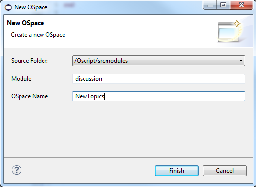

Overview
The Content Server IDE Plug-in for Eclipse (CSIDE) is the next-generation IDE for OpenText Content Server, and is intended to replace the existing Content Server Builder IDE. In addition to a new IDE, OpenText will release an officially supported source code format. The new IDE will facilitate conversion of existing modules to the new source format, and provide tools to build and maintain Content Server OSpaces, modules and customizations.
Installing the Plug-In
The minimum supported Eclipse version is Mars. Once you have downloaded and installed Eclipse (either the zipped or the installer version), copy the com.opentext.cside jar file into the "dropins" folder (used to be the "plugins" folder) in the Eclipse installation directory, and then restart Eclipse.
If you replaced an older version of the .jar file, you may need to restart eclipse with the -clean option.
Please note that only the following Eclipse IDE's are supported:
- Eclipse IDE for Java Developers.
- Eclipse IDE for Java EE Developers.
- Eclipse IDE for Java and Report Developers.
Creating a Project
The Project Creation Wizard defines both the location where you will create OScript source files and the connection to your installed Content Server instance.
Start the wizard by clicking "New > Project" from the top-level Eclipse File menu.
Select OScript Project from the OScript folder and click Next.

The project name and location can be anything you like. The project location will be where your source code is stored. A subfolder called "srcmodules" will be created where your source will be exported.
You can accept your workspace as the default project location, or use the Browse button to provide a new location.
If you already have OScript source in the .os file format in a folder called "srcmodules", you can select the srcmodule folder's parent folder and your source will be automatically imported into your project.
The Content Server directory (OTHOME) is the folder containing your Content Server installation.
Click Finish.
Your project will be created and Content Server will start up.
Starting with the 16.2.2 release, a workspace can be attached to a single server project only. Each new source project will have the server project field greyed out with the existing OTHOME of that server selected. Your workspace will be checked if multiple servers are defined and you will be notified to fix this through the Eclipse Error Log view. You will be also notified if your source project is associated with a server that no longer exists.
Project Layout
Two projects are created by the New OScript Project wizard. The first project (for example, "MyModule") has the name you provided in the Project field. That project is your "source project." It contains the srcmodules folder which will contain your OScript source code.
The second project (for example, MyModule_server) is your "server project." It contains the link to the OTHOME folder you specified.
A source project can contain multiple modules, but you can also create additional projects to separate code bases. When creating additional source projects, create the projects as before, specifying the same Content Server directory as you did for the first project.
Import your Module
To convert a module created for Content Server 10.0 or earlier to the new source format, you must first install the module.
In Eclipse, select "File > Import" from the main menu.
Under "OScript" select Source code from OLL and click "Next."
Select your modules from the list by checking the checkboxes beside them.
Selecting "Copy supplemental folders" will copy the files from your module folder in your server’s install directory to your source tree, which is helpful for placing those files under version control. Note you will need to copy those files back to your OTHome module folder if you make any changes.
Click "Finish."
The new source code for your module has been exported to the “srcmodules” folder in your source project specified by the Import dialog.
NOTE: This process overwrites any existing source code at that location, so modules should be exported more than once only in exceptional circumstances.
Building a module from source is the only way to push changes from the source files into your OLLs. From that point on, to make a permanent change to an OSpace, you should modify the .os file and compile the changes. Modifying an object using the Module Explorer has no effect on the exported source files.
The import automatically performs a full build. If there are no problems, the module should be successfully imported at this point.
If the import does encounter problems, you will need to manually fix the source files. The Problems View (Select "Window > Show View > Problems") is helpful in finding compile errors. After you make the fixes, you must perform a clean build so that all files are re-examined and parent-child relationships are properly established.
Learning the Interface
There are two primary panes used by the Content Server IDE Plug-Iin for Eclipse: the Module Explorer, and the OScript Explorer.
OScript Explorer
This pane shows all of the exported source code in the current project. While Ospaces are still divided by module, objects in an Ospace are now arranged by package. Objects are represented by .os source code files and packages by folders. The package structure in the OScript Explorer matches the folder hierarchy on disk.
By default, a package structure is generated during export to closely match the inheritance model, but need not stay that way. Objects can be moved between packages, with caution. If you move or rename an object or package, you must update the object name or the package header in each source file to match.
Each Ospace is now a base package, containing objects and subpackages. Packages are containers intended to help you organize your code.
Module Explorer

The Module Explorer provides a view into the currently running Content Server. Here, you can observe the state of currently loaded OLLs and modify their contents. This pane is similar to Builder, but has a few differences. First, Ospaces are grouped by module, instead of alphabetically.
Second, the feature list is integrated into the object browser, rather than in a separate pane. To see all features on an object, instead of just the new or modified ones, click the small "i" in a grey circle in the upper-right corner of the pane.
Object Inheritance View
When you right-click an object in the Module Explorer and then click Open Inheritance View, a new pane opens listing the object's parentage and descendants.
When you modify features and scripts using the Module Explorer, it modifies only the values stored in the OLL. It does not affect any previously exported source code, and changes to the source code will overwrite modifications made in the OLL.
Editing OScript
Writing OScript now consists primarily of editing text-based source files. CSIDE provides some tools to help OScript developers.
Overriding Features
If you don't already know the signature of a feature, function or script you're overriding, select Source > Override Features from the top-level menu to get a list of available features for the object in the current editor window.
Select the features you wish to override and hit Okay. A template containing the default value for the feature, copied from the parent, will be inserted into your object.
Xlates
Xlates allow you to move user interface string into a separate properties file so that they can be translated into other languages.
To replace a string with an Xlate, right-click on string and select "Xlate" from the context menu. You will be presented with the Find Xlate dialog.
From there, you can either choose an existing Xlate from the list, or, if the desired Xlate does not exist, hit the "New" button.
From here, select the appropriate properties file, select or add the group, and optionally change the key and Xlate text. Hit Replace and your string will be replaced with the Xlate token.
Eclipse Build System
The Content Server IDE Plug-In integrates with the Eclipse build system. When you change a source file and save it, it is immediately compiled and the object is updated in Content Server. Some changes, such as adding or removing object source files, will prompt a rebuild of the entire ospace. This happens automatically and the ospace is reloaded with the updated version.
If you would prefer not to have Eclipse building your changes in the background, you can turn off this functionality by deselecting Project > Build Automatically from the top-level Eclipse menu. Eclipse will still keep track of your changes, however, so you can trigger a build of the objects and ospaces that have changed by selecting Project > Build All. Build All does not necessarily initiate a build of all your module source code.
If you make major structural changes, it may be good idea to rebuild everything.
Run Project > Clean.
Click OK.
After you do a clean build, it is often a good idea to restart the Content Server instance. You can do this by clicking the red square in the upper-right corner of the Module Explorer.
Next, click the green arrow which appears adjacent to the red square.
Creating New Modules
To create a new module, do the following:
Select File > New > Other... from the top-level menu. Select Module from under the OScript category. Click Next.
On the New Module dialog box, enter the name of the new module (a primary OSpace will be created with the same name as well for that module) in the Module Name box. You can also set the version number.
The module's primary ospace is loaded, giving you the opportunity to make whatever changes you'd like to make before installing your new module.
Once you're ready, restart Content Server and install the module as normal.
Creating a New OSpace
To create a new OSpace in a module, do the following:
Right-click the module in the OScript Explorer, and then click New OSpace.
Specify the name of the OSpace in the OSpace Name box.

Creating a New Package
Packages are a new feature in OScript which allow you to organize your source code. To create a new package, do the following:
Right-click its parent package (an OSpace may be selected as a parent package) and then click New Package.
Specify the name of the package relative to its parent in the Package Name box.
Creating a New Object
To create a new object, do the following:
Right-click a parent object or a package, and then click New Object.
In the New Object wizard, specify the object name in the Object name box. If you select a parent object, specify a fully-qualified package name in the Package box. If you select a package, specify a fully-qualified object name in the Parent object box.
The "Browse" button helps you fill in whichever field the wizard wasn't able to fill by the context. Start typing the name of the parent object or package and it will appear in the list.
Creating Script Files
Ad hoc scripts can be used for testing and debugging content server and running automated tasks. To create a script, do the following:
Select File > New > Script File from the top-level menu.
Choose a location to save the script file and click Finish.
Debugging
Setting breakpoints
Breakpoints can be set in the editor for .os object source files, ad hoc scripts and script features. To set a breakpoint,
Double-click in the margin at the desired line.
When you run the script, or otherwise execute that line of code, you will be prompted to swith to the "Debug Perspective" in Eclipse. Execution will have stopped at that line and you can continue to step through and otherwise evaluate the state of your code.
Evaluating variables
All current variables are listed in the Variables view in the Debug perspective.
Clicking on the variable displays the current value in the pane below.
Any "Object" type variables (ie., those that can be an used in a '.' operator expression) can be expanded to inspect constituent features or values.
Variable values can be changed by clicking and editing their value in the Value column.
Debugging Weblingo
Weblingo files can be debugged like other source files.
NOTE: When setting a breakpoint in a weblingo file, ensure that the breakpoint is set in your module's html folder in your Content Server intall directory, not in the copy that you may have in your source folder. Currently, Content Server only obeys breakpoints in its copy of Weblingo HTML files.
Notes
- Content Server continues to use the Weblingo .html files, language properties files and support files in your Content Server OTHOME folder in your server project. While those files are exported to the srcmodules folder of your Source project, changes to those exported files will not be reflected in Content Server. They must be copied to your OTHOME folder manually.
- Content Server now calls BuildOSpace and SetRequestHandlers on start-up, so it's no longer necessary to register request handlers at development time. To create a request handler, just create a new child of the appropriate request handler, set fEnabled to TRUE and it should register itself the next time your restart CS.